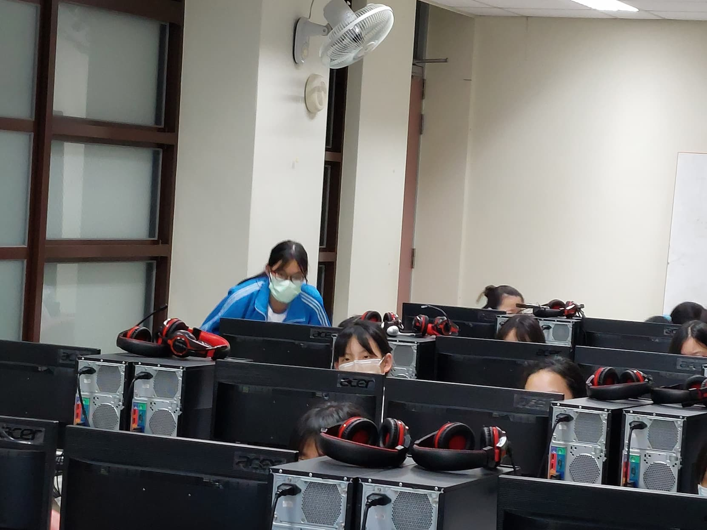
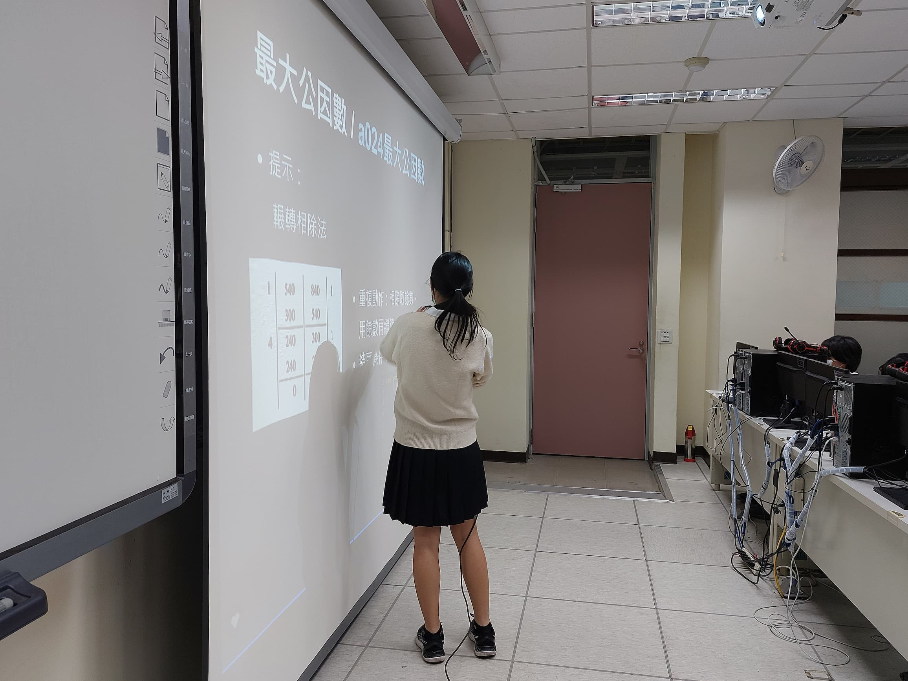
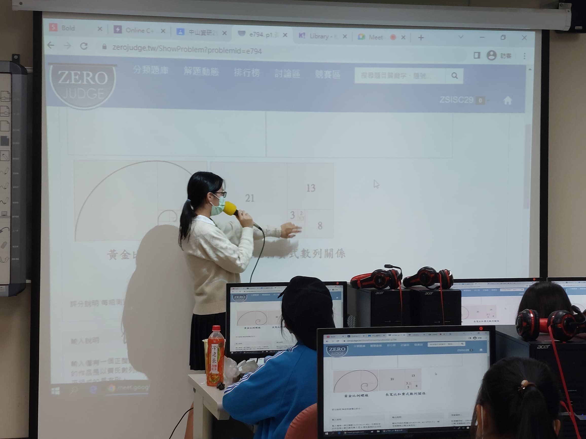
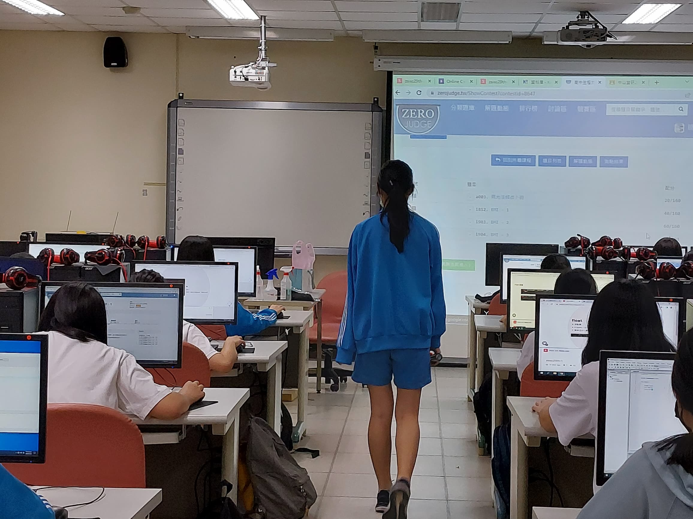
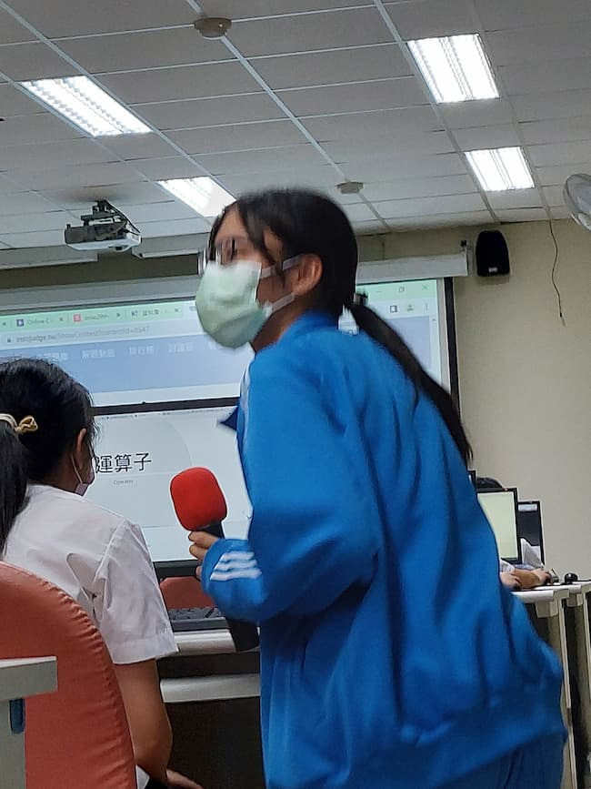

資訊研究社教學
zsisc29th 2022/09-2023/06課程規劃
社團內共有三位教學分擔社課內容，任期一學年，課程分為上下兩學期，授課內容以C++為主。
上學期著重在基礎C++語法；下學期由於大家吸收程度不一且有轉社新生，於是分為基礎與進階兩班：基礎班著重複習上學期內容並帶入實作、進階班則講解C++STL庫與常見演算法。
主要使用GoogleClassroom公告課程事宜，每堂課後依當天內容布置加分作業，學期初有自學考讓程度較好的同學可以自由活動，期末考試為基本分選擇題和加分上機實作題。
相關連結： 下學期課程規劃hackmd
教材準備
課程內容：slides, kahoot, hackmd
課後作業：zerojudge, google表單
主要會準備slides用作授課簡報，實作課則用hackmd整理範例解，課程結束後用kahoot小測驗作為結尾，前幾名會用社費頒發小零食。
雖然zerojudge有不少現成題目，但因為需要讓題目配合上課進度調整難易度，所以一開始很常花時間準備題目跟測資，偶爾會用google表單做小測驗，通常表單的繳交率會比zerojudge實作題高。
後來也有人會用slidos，教材種類日新月異，但我光是準備最基本的內容就忙不過來了……
授課情況
因為授課對象是平輩不需要太拘謹，常在凌晨一兩點收到學弟妹來詢問課後作業或其他資訊相關的問題，或是來點播課間音樂，彼此間互動良好。
最印象深刻是在第一學期的期末上機考，因為我出的題目有點難度，看到有人作答成功很開心地想看看他們的寫法，意外發現抄襲程式碼的情形，當下最難受的是意識到我的題目會以零人得分作結。後來跟教學夥伴討論後私下和學妹約時間，提醒他們考試公平性，既不希望他們再犯也不希望這件事影響到他們和社內同學的關係。
當時程度較好的同學因為同儕關係不好拒絕抄襲，且在提醒之後有反省，準備試教內容認真，後續也成為社團下一屆教學名單，但在交接過程中意外被得知當時抄襲的事件，雖然只大了一屆還是花了不少心力在處理他們的同儕關係。
我自己在高三才有在更認真做資訊相關的應用，後來總認為當時的授課內容講得不太精準，也有很多有趣的東西沒有和他們分享到。
暑期營隊講義
第一次正式上課就要帶營隊，還跟建中生合開這堂課，現在看東西好青澀。
上學期講義
C++基礎語法，其實社團不少人是有基礎的，每次都會準備一些補充的進階資料給他們。
下學期講義
進階班的課每次都很怕講錯，而且社課50分鐘根本來不及，STL最後只講如何操作沒有細說背後的資料結構。
課堂剪影
少量授課照片




